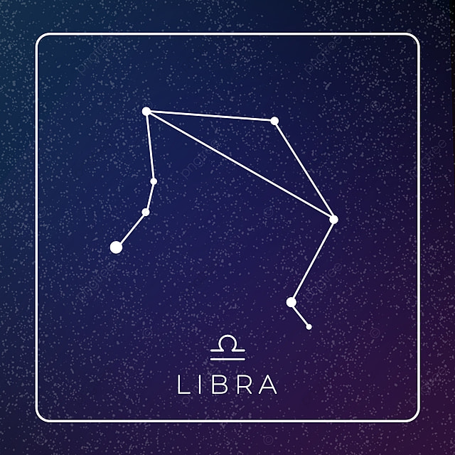

| NOMBRE | IMAGEN | DESCRIPCIÓN |
|---|---|---|
| Capricornio | Capricornus (la cabra mitad pez) es una de las constelaciones del Zodíaco, llamada comúnmente Capricornio, sobre todo en lo referente a la astrología. Aunque a veces se representa como una cabra, generalmente se le añade una cola de pez. | |
| Acuario | Acuario (el portador del agua o ánfora), es una de las 88 constelaciones reconocidas por la astronomía moderna, descrita por Claudio Ptolomeo. Su símbolo representa el flujo del agua. | |
| Piscis | Pisces (los peces) es una constelación del zodiaco ubicada entre Aquarius al oeste y Aries hacia el este. Con magnitud 3,62, su estrella más brillante es η Piscium, denominada oficialmente Alpherg.1 Es una gigante luminosa amarilla de tipo espectral G7IIa con una temperatura superficial de 4930 K.2 | |
| Aries | Aries (el carnero) es una de las constelaciones del zodíaco; se encuentra entre las constelaciones de Piscis, al oeste, y Tauro al este. α Arietis recibe el nombre de Hamal1 y es el astro más brillante con magnitud 2,01. Es una gigante naranja cuyo radio, como corresponde a una estrella de sus características, es casi 15 veces más grande que el radio solar. | |
| Tauro | Tauro o Taurus es una constelación zodiacal; su nombre en latín es Taurus y en español toro. Destaca en el cielo invernal, entre Aries al oeste y Géminis al este. Al norte se encuentran Perseo y Auriga; al sureste Orión, y al suroeste Eridanus y Cetus | |
| Géminis | Gemini (los mellizos) es la tercera constelación del zodíaco, y se encuentra a unos treinta grados al noreste de Orión. William Herschel descubrió Urano cerca de η Geminorum en 1781, y Clyde Tombaugh hizo lo propio con Plutón cerca de δ Geminorum. | |
| Cáncer | Cáncer (el cangrejo), en astronomía, es una de las doce constelaciones del zodíaco. En astrología, Cáncer constituye uno de los doce signos zodiacales. La constelación de Cáncer es pequeña y débil. Se encuentra entre las constelaciones de Géminis al este, Leo al oeste, Lince al norte y las constelaciones de Canis Minor e Hidra al sur. | |
| Leo | Leo (el león) es una de las constelaciones del zodíaco. Se encuentra entre Cáncer y Virgo. Quizá una de las constelaciones más conocidas, Leo contiene muchas estrellas brillantes, destacando entre ellas α Leonis, llamada Régulo («pequeño rey» en latín); en la antigüedad recibió el título de «corazón del león» | |
| Virgo | Virgo (la virgen) es una constelación del zodíaco. Se encuentra entre Leo al oeste y Libra al este y es una de las constelaciones más grandes visibles en el cielo. Virgo se representa a menudo portando dos gavillas de trigo, una de ellas señalada por la brillante estrella Espiga o Spica, la «espiga» de los agricultores medievales. | |
| Libra |  | Libra (la balanza), es la séptima constelación del zodiaco en el cielo. Bastante discreta, no tiene estrellas de primera magnitud, estando situada entre Virgo al oeste y Escorpio al este, notablemente más llamativas. Como se evidencia por los nombres de sus estrellas más brillantes. |
| Escorpio | Escorpio (el escorpión) es una de las 88 constelaciones modernas. Antiguamente esta constelación se representaba unida a la que hoy se conoce como Libra (que no existía, se cree que fueron los romanos quienes primero la imaginaron). Las estrellas que hoy se conocen como alfa y beta Librae representaban las pinzas sur y norte del escorpión. | |
| Ofiuco | Ofiuco u Ophiuchus (el portador de la serpiente o Serpentario), también conocido como "El cazador de serpientes", es una de las 88 constelaciones modernas y una de las 48 listadas por Ptolomeo. Puede verse en ambos hemisferios entre los meses de abril a octubre por estar situada sobre el ecuador celeste. | |
| Sagitario | Sagittarius (el arquero) es una constelación del zodíaco, generalmente representada como un centauro sosteniendo un arco. Sagittarius se encuentra entre Scorpius al oeste y Capricornus al este. |